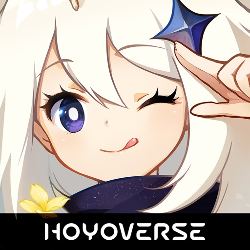
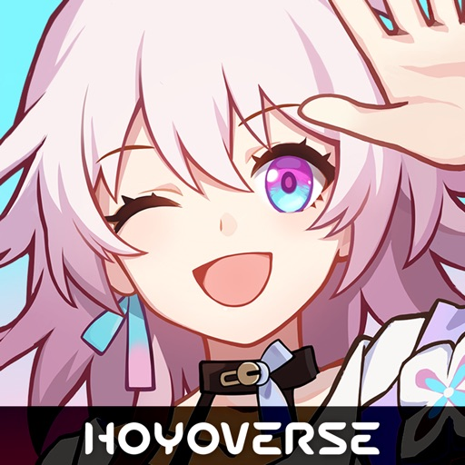
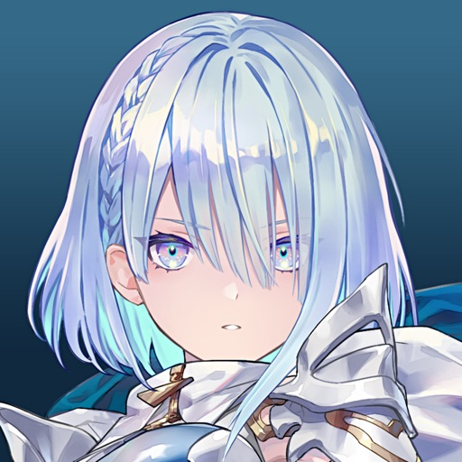
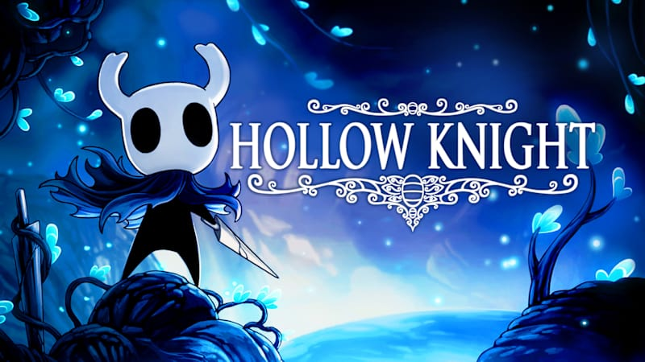
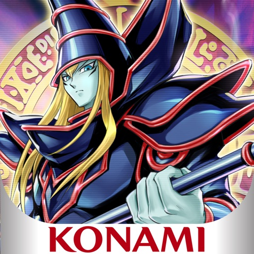
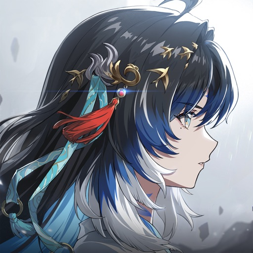

原神
01 / ABOUT
我喜歡站在需求與技術之間，拆解問題、設計流程，並用 AI 工具打造更簡潔可靠的解法。
01 / OPEN SOURCE
我在 GitHub 上實作、分享與參與的開源作品。
AI APPLICATION
結合資料分析與機器學習的股票趨勢預測助理，將模型結果整理成易於理解的決策資訊。
Python · Machine Learning
FRONTEND EXPERIENCE
以互動為核心的網頁電子寵物，透過動畫與前端狀態管理打造輕鬆、有生命感的瀏覽體驗。
HTML · CSS · JavaScript
COMPUTER VISION
整合電腦視覺與 AI Agent 的擴增實境導航概念，探索即時環境辨識與行動指引。
Python · OpenCV · AI Agent
DATA FOR PEOPLE
以 AI Agent 協助查詢與解讀空氣品質資訊，讓環境數據更容易轉化為日常行動。
Python · AI Agent
AI AUTOMATION
整合 Computer Use MCP，讓 AI 能安全地操作桌面環境，完成應用程式啟動、畫面確認與工作流程自動化。
MCP · Computer Use · Automation
02 / 喜歡的遊戲

原神

崩壞：星穹鐵道
魔物獵人：荒野

暗影詩章：凌越世界

空洞騎士

遊戲王 Master Duel

鳴潮
03 / EXPERIENCE
2025 — 現在
國立臺中科技大學
投入資訊技術、AI 應用與軟體工程的學習與實作。
012026 夏季
智慧物流青年 AI 實作培訓
協助學員完成 AI 實作專題，並提供演算法應用與開發方向的引導。
0204 / CONTACT
無論是合作、交流，或只是想聊聊 AI 與產品，歡迎來信。